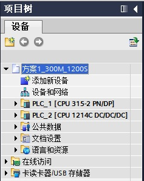
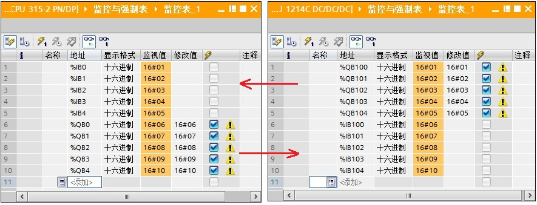
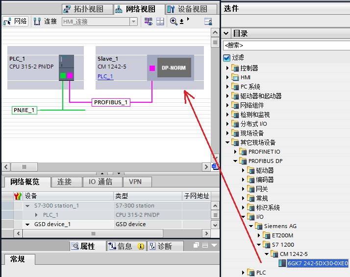
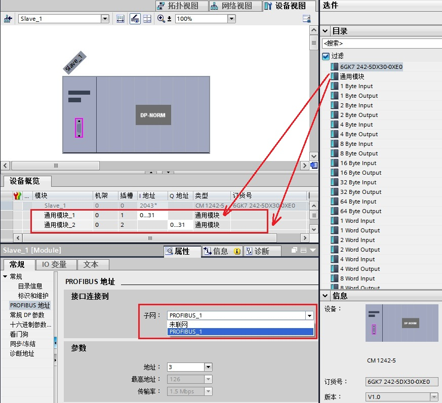
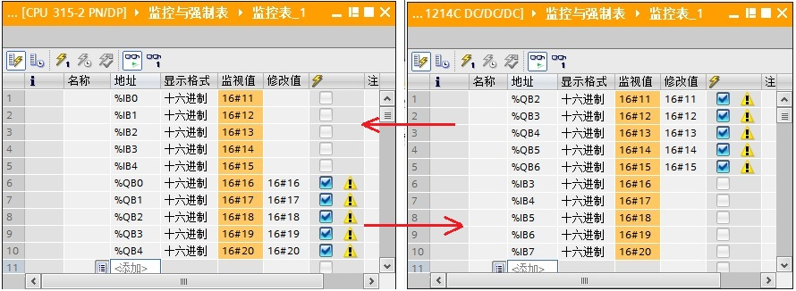
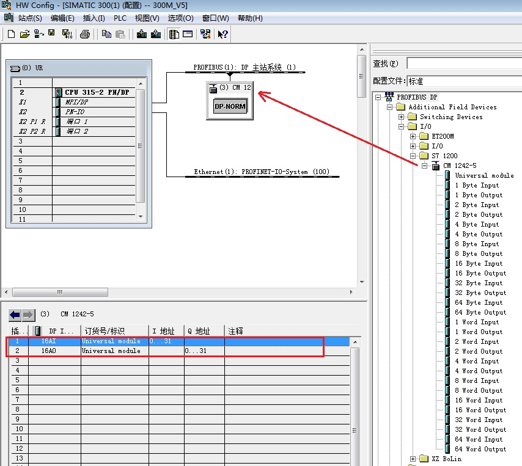
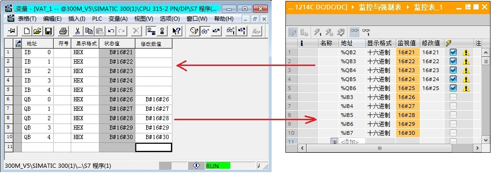

使用 S7-1200 与 S7-300 的集成 DP 接口进行主从通信，这里是将 S7-300 做为主站，将 S7-1200 做为从站，即：S7-300 集成的 DP 接口做主站，S7-1200 通过 CM1242-5 做从站。下面详细介绍使用方法。
硬件：
软件：
S7-300 集成的 DP 接口做主站，S7-1200 通过 CM1242-5 做从站，这种方式可以分2种情况来操作，具体如下：
S7-300 的集成 DP 接口做 DP 主站，CM1242-5 做 DP 从站，使用 Step7 V12 在一个项目中操作，详细步骤如下。
使用 STEP7 V12 创建一个新项目，并通过“添加新设备”组态 S7-300 站 PLC_1，选择 CPU 315-2 PN/DP；接着组态 S7-1200 站 PLC_2，选择 CPU1214C DC/DC/DC V2.2；如图 1 所示。

图 1 在新项目中插入 S7-300 站和 S7-1200 站
组态 S7-300 的集成 DP 接口，进入属性框，在“PROFIBUS 地址”界面，添加子网“PROFIBUS_1”,地址选择 2；在“操作模式”界面，操作模式选择“DP 主站”，如图 2 所示。
图 2 组态主站 CUP300 的 DP 接口
接着组态从站 CM1242-5 的 DP 接口，进入 CM1242-5 的属性框，在“PROFIBUS 地址”界面，选择子网“PROFIBUS_1”,站址选择 3；在“操作模式”界面，选择“DP 从站”，“分配的 DP 主站”选择“PLC_1.MPI/DP接口_1”，在传输区域创建 2 个区域（“传输区_1”、“传输区_2”），输入输出各 16 个字，如图 3 所示。

3-4 通讯测试
在同一项目中，分别为 S7-300 和 CPU1214C 创建监控表，进行通讯测试，如图 4 所示。

图 4 同一项目通信测试
S7-300 的集成 DP 接口做 DP 主站，CM1242-5 做 DP 从站，不在一个项目中的操作，即：CPU 1214C 使用 Step7 V12，而 S7-300 分别使用 Step7 V12 和 Step7 V5.5，详细步骤如下。
使用 STEP7 V12 创建一个新项目，并通过“添加新设备”组态 S7-1200 站PLC_1，组态 CM1242-5 的 DP 接口，进入 CM1242-5 的属性框，添加子网“PROFIBUS_1”,站址选择 3；“操作模式”界面，选择“DP 从站”，“分配的 DP 主站”选择“未分配”；在智能从站通信的传输区域添加 2 个传输区（“传输区_1”、“传输区_2”），数据长度都是 16 个字。注意：要与主站的输入输出对应，即：“传输区_1”为从站的 16 个字的输出，“传输区_2”为从站的 16 个字的输入。如图 5 所示。

图 5 插入 S7-1200 站并组态从站 CM1242-5
如果主站项目软件使用的是 Step7 V12，首先安装 CM1242-5 的 GSD 文件。CM1242-5 的 GSD 文件下载链接：si01818e。
在软件 Step7 V12 中，通过“选项”进入“安装设备描述文件”界面， 在源路径选择 CM1242-5 的 GSD 文件存放路径。注意：源路径中不能有中文字符。如图 6 所示。

图 6 Step7 V12 安装 CM1242-5 的 GSD 文件
接着在主站项目中组态从站，在网络视图中，将 CM1242-5 从“选件”中拖拽并放入到网络视图中。如图 7 所示。

图 7 拖放从站 CM1242-5（V12 软件）
双击图 7 中的 CM1242-5 的图标，进入 CM1242-5（slave_1）的设备视图，进入设备的属性框中，子网选择“PROFIBUS_1”，地址选择 3，在设备概览中，插入通用模块，形成“通用模块_1”和“通用模块_2”，注意：“通用模块_1”和“通用模块_2”与 2-1 的从站“传输区_1”和“传输区_2” 必须要对应，即：主站的输出对应从站的输入。如图 8 所示。

图 8 组态从站 CM1242-5（V12 软件）
然后进行通信测试，Step7 V12 创建的 S7-300 做 DP 主站的项目，Step7 V12 创建的 CM1242-5 做 DP 从站的项目，两个项目分别新建监控表，进入通信监控，如图 9 所示。

图 9 不同项目通信测试(V12 与 V12，第二种情况)
如果主站项目软件使用的是 Step7 V5.5，首先安装 CM1242-5 的 GSD 文件。CM1242-5 的 GSD 文件下载链接，详见 2-2。
在软件 Step7 V5.5 中，通过“选项”进入“安装 GSD 文件...”界面， 在源路径选择 CM1242-5 的 GSD 文件存放路径。如图 10 所示。
 图 10 Step7 V5.5 安装 CM1242-5 的 GSD 文件
图 10 Step7 V5.5 安装 CM1242-5 的 GSD 文件
接着在主站项目中组态从站，将 CM1242-5 拖放到主站的 DP 网络中，使用“Universal module”组态输入输出。注意：主站的输入输出与 2-1 的从站“传输区_1”和“传输区_2” 必须要对应，即：主站的输出对应从站的输入。如图 11 所示。

图 11 组态从站 CM1242-5（V5.5 软件）
然后进行通信测试，Step7 V5.5 创建的 S7-300 做 DP 主站的项目，Step7 V12 创建的 CM1242-5 做 DP 从站的项目，两个项目分别新建监控表，进入通信监控，如图 12 所示。

图 12 不同项目通信测试(V5.5 与 V12，第二种情况)